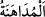
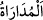
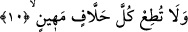

Bâzı âlimler bu âyet-i kerîmeye şöyle mânâ vermişlerdir: Ey Muhammed! Sen onlara
bâtınen uymadığın gibi zâhiren de uyma. Çünkü zâhiren uyma, bâtınen uymanın
sonucudur. “Muhâlefet” için de aynı şeyleri söylemek mümkündür. Âyet-i kerîmeyi bu
şekilde anlamaz ve Peygamberimiz (s.a.)’in kâfirlere içten içe uymadığını söylemeyecek
olursak, bu çabucak zâil olan bir münâfıklık ve sona ermek üzere olan bir yağcılık
demek olur. Kâfirlere gelince ahlâksızlıklara daldıkları, bukalemun gibi çeşitli renklere
ve boyalara girdikleri, hevâ ve heveslerinin farklılığına, arzularının ve ümidlerinin
değişikliğine uygun olarak çeşitli karakterler sergiledikleri için yağcılık yapıyorlar;
senin de onlara yağcılık yapacağını umarak ahlâksızlıklarına ahlâksızlık katıyorlar.
Bâzı âlimlere göre “__WORD__ /müdâhene” dîni dünya karşılığında satmaktır ki bu,
günahlardan sayılır. “__WORD__ /Mudârâ” ise dünyayı din karşılığında satmaktır ki bu da
güzel hareketlerdendir.
Derler ki; “iddihân” lâyık olmayan kimseye karşı yumuşak olmak demektir.
Dolayısıyla bu iş şu hâliyle “mudâra”yı emreden peygamber hadisine çelişik değildir.
Nitekim Peygamber Efendimiz şöyle buyururlar: “Tebliğ ile emrolunduğum gibi
insanlara karşı mudârâ ile de emrolundum.” [40]
İmam Gazzali (rh.) İhya-ü ulumiddin’inde der ki: “Mudârâ” ile “müdahene”
arasında sabr ve tahammüle sevkeden faktör ve amaç açısından fark vardır. Eğer bir
kimse dîni uğruna ümmetten geleceklere sabırlı olursa ve din kardeşinin ıslahı uğrunda
tahammül gösterirse bu “mudâra”dır. Buna karşılık insan nefsine elde edeceği bir pay,
şehvetlerini tatmin etme ve bulunduğu mertebeyi sağlama alma uğruna sabır ve
tahammül gösteriyorsa bunun adı “müdâhene”dir.
Ebu’d-Derdâ (r.a.) der ki: “Biz bâzı insanların yüzlerine gülümsüyoruz oysa
kalplerimiz onlara lânet okuyor.” İşte bu söz mudârayı açıklamaktadır. Mudara, insanın
kötülüğünden korktuğu kişilere karşı sergilemiş olduğu bir davranıştır.
10. (Rasûlüm!) Alabildiğine yemin eden, aşağılık kimselere sakın boyun eğme.
“Alabildiğine yemin eden” kimselerden hiçbirine mal ve oğulları vardır diye sakın
boyun eğme.
Âyetin deyimiyle “hallâf,” yeminin değerini bilmediği ve inancının bozukluğu
dolayısıyla yemin etmeye aldırmadığı için haklı ve haksız yere çok yemin eden kişi,
demektir. Âyette kâfirlere itâatı yasaklayan nitelikler arasında özellikle “çok yemin
etme” vasfına öncelik verilmesi, bu özelliğin kâfirlere itâat etmeyi yasaklama
noktasında en etkili olmasından dolayıdır.
Keşşaf’ta şöyle denir: Yemin etmeyi alışkanlık hâline getirmiş kimse için âyetin bu
ifâdesi yeteri kadar sakındıran bir ifâdedir. Bunun bir benzeri “yeminlerinizden dolayı